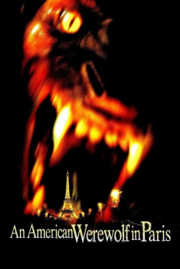
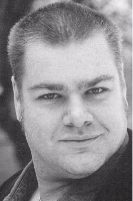

#10640 American Werewolf in Paris
Alternativ: An American Werewolf in Paris (Englischer Titel)
 
 IMDB-Wertung: 5.1 / 10
IMDB-Wertung: 5.1 / 10  Metascore: 31
Metascore: 31 
Serafine stürzt sich vom Eiffelturm. Kurz vor dem Aufprall kann Bungee-Jumper Andy sie retten und lässt sie auf den Boden gleiten. Für den amerikanischen Urlauber Andy ist es Lie-be auf den ersten Blick, doch Serafine möchte Abstand halten, denn sie hütet ein dämoni-sches Geheimnis. In Vollmondnächten ver-wandelt sie sich in eine kannibalische Kreatur. Auf der Spur dieses Geheimnisses fällt Andy einer Sekte zum Opfer, die es geschafft hat, den Vollmondfluch zu überwinden. Mit der Injextion eines Serums ist es möglich gewor-den, sich jederzeit in einen Werwolf zu ver-wandeln...
Jahr: 1997
Dauer: 97 Minuten
FSK: 16
Land: England Studio: Concorde FilmverleihTonspuren: DTS - ,
Untertitel: Deutsch, Englisch,
Auflösung: 1080p (1920x1040) Größe: 6656 MB
Genre: Thriller, Horror, Komödie, Fantasy
Regisseur: Anthony Waller
Drehbuch: John Landis, Tim Burns, Tom Stern, Anthony Waller
Soundtrack: Wilbert Hirsch
Darsteller:
- Tom Everett Scott als Andy McDermott
 Julie Delpy als Serafine Pigot
Julie Delpy als Serafine Pigot- Vince Vieluf als Brad
- Phil Buckman als Chris
 Julie Bowen als Amy Finch
Julie Bowen als Amy Finch- Pierre Cosso als Claude
- Thierry Lhermitte als Dr. Thierry Pigot
- Maria Machado als Chief Bonnet
-  Charles Maquignon als Bouncer
 Alan McKenna als Lycanthrope
Alan McKenna als Lycanthrope- Chris Bearne als Surgeon
- Anthony Waller als Metro Driver
- Tom Novembre als Inspector LeDuc
- Ben Salem Bouabdallah als Detective Ben Bou
- Serge Basso als Officer with Flashlight
- Jochen Schneider als Lycanthrope
- Hervé Sogne als Lycanthrope
- Edgar Kohn als Lycanthrope
- Jean-Claude Deret als Professor Martin
- Isabelle Constantini als Serafine's Mom (Alex Price-Pigot)
- David F. Friedman als Nightclub Visitor
- Christian Magnani als Bruno
- Pierre Bodry als Waiter on Train
- Pieter Riemens als Waiter in Restaurant
- Emile Cappachione als Bodybuilder
- Serge Hugel als French Car Driver
- John Waller als British Car Driver
- Nicholas Waller als Taxi Driver
- Csilla Szabò als
- Alain Christie als Inspector LeDuc (uncredited)
Datei: X:\2-Dilogie(A-F)\American Werewolf\American Werewolf in Paris (1997, FSK16, 1920x1040).mkv seit 08.02.2019
Festplatte: HD Collection-2(A-Z)-3(A-M)
 Alle Filme aus Gruppe '2-Dilogie(A-F)\American Werewolf'
Alle Filme aus Gruppe '2-Dilogie(A-F)\American Werewolf'